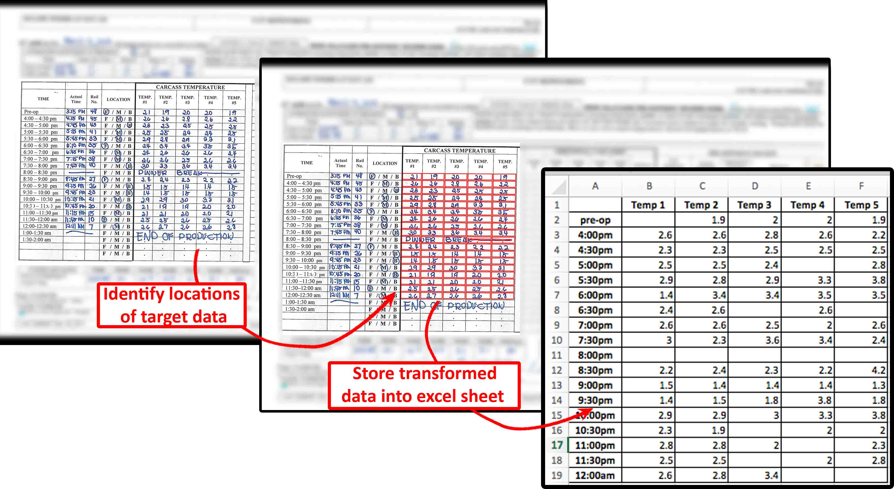
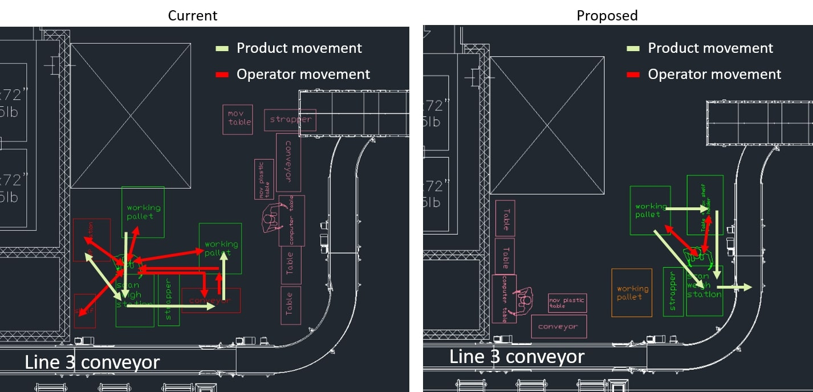
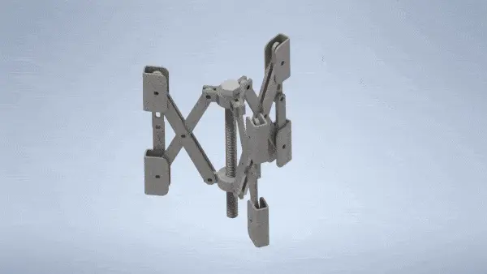

An Automation Engineer with over 3 years of experience from professional employment in the roles of Manufacturing, Industrial, Product, Automation and Data Engineer.
About Me
A detail-oriented Engineering professional with a double M.Sc. in Engineering Automation from KTH Royal Institute of Technology (Sweden) and UNITN (Italy) and a Bachelor's in Mechanical Engineering from the University of Manitoba, Canada
5 years of experience that stems from projects completed during University, Co-Op placements,
and over 3 years of professional employment at Hylife, Global Drain Technologies, NorthVolt and Scania in various roles
Experienced in the Food Production, Fabrication, Sheet Metal, Battery Production and Automotive Industries.
Knowledgeable about many concepts in Machine Learning, Automation, and robotics, especially robot control and mission planning
Strong experience in languages such as; Python, C++, Matlab, JavaScript, ROS, SQL, Java, HTML
Foundational understanding of Operational Excellence and Lean Six Sigma principles.
Used the Continuous Improvement model and tools on a daily basis such as; DMAIC, 5s, 5 Whys, and VSM.
Supplemented root cause analysis with statistical tools such as Mini-tab and R to analyze and
understand the significance of variables
Experienced in project management, product design, prototyping, new product releases, and innovative solutions.
Expert in many 2D/3D modeling software such as AutoCAD, Inventor, and SolidWorks. Fundamental Knowledge of rapid prototyping, especially additive manufacturing [3D Printing]
Work Experience
Data Scientist [Master Thesis Worker]
Aug 2022 - Jan 2023
Scania CV AB
Södertälje, Sweden
The master thesis is a project which involves using Generative Adversarial Networks (GANs) in a federated learning setting with time series data
Performed extensive background research and experimented with multiple state-of-art generative models and federated learning architectures
Hands on experience with Pytorch and TensorFlow framework for creating neural networks especially with deep convolutional networks
Automation Engineer [Internship]
Apr 2021 - Sep 2021
NorthVolt
Skellefteå, Sweden
Part of the Material Flow and Robotics team responsible for building the NorthVolt Ett battery Giga-Factory
Worked in a true multi-cultural environment as NorthVolt employs upwards of 85 different nationalities
Managed projects that involved outsourcing and optimizing manual and automated equipment for material flow
Dealt with high speed process equipment, conveyor belts, robot arms and Automated Guided Vehicles [AGVs]
Represented NorthVolt as the primary source of contact for the projects I managed both internally and externally
Created Requests for Quotations [RFQs] using the technical specifications for the required equipment
Received quotations and nominated suppliers by aligning with the purchasing team, sourcing council, and the supplier
Pushed to achieve projects' milestones such as Mechanical and Electrical Design approvals, Factory Acceptance Tests [FATs], and Site Acceptance Tests [SATs]
Monitored progress of projects and dealt with deviations accordingly by involving stakeholders when required
Product Engineer
Dec 2019 - Aug 2020
Global Drain Technologies
Winnipeg, Manitoba, Canada
Designed new and innovative drainage products to fit customer needs using Autodesk Inventor
Part of launching new food safe product line consisting of hygienic round area drains
Took products from hand drawn sketches to production ready designs
Prototyped builds and assembly fixtures required for production release
Researched and implemented processes to produce industry standard surface finishes and corrosion resistance
Sourced materials for new designs and produce cost estimates that align with budgetary requirements
Managed the release of all production drawings, instructions and quality standards for new product lines
Industrial Engineer
May 2019 - Dec 2019
Hylife Ltd
Neepawa, Manitoba, Canada
Collaborated with the Operations Team to identify and work on solving daily obstacles that encounter production
Designed, transcribed and edited company Standard Operating Procedures
Involved in re-design projects to solve existing equipment problems on the production floor. Use SolidWorks and Inventor for part design
Designed Simulations using JavaScript to predict outcomes of equipment change
Gathered and performed in depth analysis on production data to identify the most impactful variables
Collaborated with company vendors to address ongoing deficiencies
Performed cycle and takt time studies to determine process capabilities and manning power requirements
Participated and helped organize with teams to perform Kaizen, 5S and JIT events
Chaired weekly team meetings to discuss projects progress with stakeholders
Championed and evolved continuous improvement initiatives, especially in reducing/ eliminating waste
Performed analysis to find best solution for getting our products internal temperature to -18 degrees celsius within 48 hours
Designed and Wrote logic for PLC to solve an indexer problem on a three conveyor system
Manufacturing Engineer
Jan 2018 - May 2019
Hylife Ltd
LaBroquerie, Manitoba, Canada
Started as a co-op student, proved myself in the company, and I was offered a manufacturing engineering position to start as soon as I finished my engineering degree
Completed projects in multiple departments involving Feed Mills, Barns, and the meat processing plant
Member of the commissioning team for a new Feed Mill in Killarny, Manitoba. Verified capacities, analyzed complications, and performance of ration inclusions
Collaborated with contractors to troubleshoot deficiencies
Responsible for quality improvement projects involving statistical tools. Set up project charters, fishbone diagrams, and 5 why's for root cause analysis
Gathered and performed in depth analysis on production data
Chaired weekly team meetings to discuss projects progress with stakeholders
Engineering Coop Student
May - Aug 2017
Hylife Ltd
LaBroquerie, Manitoba, Canada
Value stream mapped the entire feed mill process
Analyzed available data to look for trends, bottlenecks or issues
Used analytical processes to draft and design potential solutions
Collaborated with feed mill staff to implement concepts
Monitored all process changes and their effect on production
Implemented Quick Kaizens and SOPs for process improvement
Production Assistant
May - Aug 2016
Winpak
Winnipeg, Manitoba, Canada
Assisted manufacturing supervisors in technical and administrative tasks
Worked closely with the machine operators in a fast-paced environment
Performed spot diagnoses for daily problems encountered
Gained foundational knowledge regarding production floor work dynamic
EDUCATION EXPEREINCE
DOUBLE M.SC. IN AUTONOMOUS SYSTEMS
Aug 2020 - Sep 2022
KTH Royal Institute of Technology | University of Trento
Stockholm, Sweden | Trento, Italy
A two year double M.SC. degree program in Engineering Automation and Robotics
Studies combine Computer Science and Electrical Engineering
In Computer Science, studies focused on Internet of Things (IoT), Machine Learning, Artificial Intelligence and Robot Vision
In Electrical Engineering, relevant fields are Automation, Control, Embedded Systems and Communications
Innovation and Entrepreneurship as a business minor
Driver-less KTH Formula team member in the Perception department where I worked with sensor fusion to detect and locate cones
B.SC. IN MECHANICAL ENGINEERING
Sept 2013 - May 2018
University of Manitoba
Winnipeg, Manitoba, Canada
A five year B.SC. degree in Mechanical Engineering
Studies focused on thermal science, fluid mechanics, manufacturing and controls, material science engineering, applied mechanics, productions and operations research
Excelled in my studies and was on the Dean's Honor List six times
Part of a team that represented the University of Manitoba in the Western Engineering Competition [WEC]
AUTOMATION PORTFOLIO
Court Detection using Deep Hough Transform Line Priors
This is a course project that implemented the use of the Deep-Hough-Transform-Line-Priors to detect tennis court lines and find the homography matrix
Filtering the lines post detection is necessary to identify the true bounding box of the court and to calculate the homography matrix. The homography matrix can be utilized to warp the perspective and deployed in various other applications such as score tracking or player movement behaviour during the match
The process pipeline and three examples of applying and scoring the homography matrix are shown below
ARTIFICIAL INTELLIGENCE ALGORITHMS
Learned about the different principles of artificial intelligence, and used them to implement solutions to AI problems
Topics covered were as follows:
Problem solving: Search, Games
Taming uncertainty: Probabilistic reasoning, Bayesian Networks and Hidden Markov Models
Decision making under uncertainty: Decision making using Markov Decision Processes (MDPs) and Partially Observable Markov Decision Processes (POMDPs), Reinforcement learning
Knowledge, reasoning, and planning: Logic, Planning
Communicating and perceiving: Natural language processing, Computer vision
Implemented Minmax algorithm in a game of fishing derby against an intelligent agent. Used the scoring and the Euclidean distance as a heuristic
Used Hidden Markov Model (HMM) to model a fish type guessing game.
Started with random guessing at the beginning, then used those guesses to build lambda models for those known types to build a more accurate guess for the unknown fish
AGENT NEGOTIATION AND COMMUNICATION WITH GAMA SIMULATIONS
UNDER CONSTRUCTION
AUTONOMOUS TARGET SHOOTING VEHICLE
The main objective of the project was to design and manufacture an autonomous vehicle powered by Arduino that can navigate a course and fire projectiles at targets
The vehicle and all of its external components were designed using SolidWorks. The additional components required to meet the objective of launching a projectile to a target from the track were manufactured using rapid prototyping (3D printing), laser cutting, and CNC machining
The track was designed such that the vehicle required an array of line sensors and bump sensors to successfully navigate it
Navigation was based around skid steering, utilizing line sensors mounted to the front of the vehicle and bump sensors on the sides of the vehicle
In order to hit the targets, a spring powered rack and pinion launcher was designed, using a continuous servo (for pulling back the rack) and one position control servo (for a rotary magazine/carousel to load BBs)
The launcher was placed on a movable platform to adjust trajectory. A gear reduction was used to maintain torque when pulling the firing piston (rack) back. The loading mechanism utilized the position control servo to rotate the carousel magazine, dropping one BB into the chamber at a time. The magazine was designed with a capacity of six BB’s and to automatically reset itself
In order to detect the brass rods on the track indicating launch positions, the bump sensors were mounted on the side of the vehicle using 3D printed brackets
A PID controller was employed to keep the car in the middle of the track
Link to Album for more pictures and testing video: Link
Was chosen to be a part of the team that represented the university of Manitoba for innovative design in the Western Engineering Competition [WEC]
Designed and presented an automated solution for cleaning the oceans from micro-plastics
One of the areas that suffer the most from garbage disposal are the oceans, which now hosts 5.25trillion pieces of plastic debris. This translates to about 269000 tones of floating plastic waste on the surface of the oceans
The UV radiations cause the large plastic objects to fragment into even smaller pieces that are called micro-plastics. Micro-plastics are not just harder to extract, but also more harmful for the small creatures that form the base of the marine food web
To help aid in the cleaning efforts, a drone would be a very helpful and effective way of tackling this problem. The drone is automated and could be de-ployed to look for and collect the micro-plastics floating on top of the ocean
The drone has a storage unit on board, which when filled, returns to a base to empty what it has collected
This drone does not need human interference as it can do its job autonomously and go back to its base when its either full or need to charge
The affordable designed drone featured a torpedo shape body frame, floaters to maintain sea level, renewable energy power source, autonomously controlled, and could provide real time data
Designed bases to host the drone, drop collected waste, clean the filter and to charge if needed. The bases could be 100 km's apart
The bases consist of a swivel and a sliding mechanism to grab and hoist the drone in position. They also include a filter extractor to open the drone front cover, move the filter out to clean it and drop the caught micro-plastics into a storage tank. The bases have an on board tracking system, batteries and solar panels
MORE TO COME
ROBOTICS PORTFOLIO
ROBOT SEARCH AND RESCUE
Objective is to search an unknown environment for a target using cooperative robots
The robots have no previous knowledge of the environment and need to collaboratively explore to find and rescue the target
Written in Python/C++ and used Robot Operating System(ROS) along with Gazebo as simulation engine
the robots are the turtlebot3 burger model with 2 drivable wheels and a lidar sensor
The map is unknown and has obstacles. The robots start close to each other at one side of the map
Used SLAM gmapping for localization and mapping
Employed cooperative exploration approach using dynamic Voronoi partitions
Robots explore map cooperatively until target is found
Robots favor exploration until target is found
The density function changes once the target is found to attract them to go rescue it
The explored map is shared between the robots to minimize duplication
Used move base package for cost maps and local/global planning
Global planning uses A* and the local collision avoidance uses DWA
The project's objective is to evacuate three robots from a room in which a number of obstacles are present
Evacuation must be as fast as possible without colliding with any walls, obstacles or with each other
The robot's initial positions, the location of the gate, and the number/ location of obstacles are random
Written entirely in C++ and used Robot Operating System(ROS)
The solution is based on constructing a roadmap using the vertical cell decomposition algorithm
The path for each robot is then found by using breadth first search and later optimized to remove any redundant movements
Once we find all paths for the robots, we recursively check for collision detection between the robot paths and adjust them accordingly
The optimization is done by looking ahead to the future. Each point on the path is allowed to look at the upcoming points (up to a defined limit). It compares the distances between itself and each point that is on the horizon. The smallest distance will decide which point we will jump to next [given that no collision has been detected]
The function uses a tunable cost discount that could encourage going for further away points [in the index] even though they are not the least distance
The look ahead that decides the horizon is a variable that is controlled by the algorithm. It starts greedily with the full horizon, then later restricts it to allow for an increase in the distance of the path
As shown in the figure below, that increase in the length is done when a collision has been detected on that path to maybe allow for more time for the other robot to clear the collision point
A Gazebo simulation of a TIAGo robot localizing in a previously mapped apartment
The robot has several onboard sensors and a manipulator which enable it to navigate and interact with the environment through simple manipulation tasks
The robot has modules for path planning, control, localization, sensing, and manipulation
The main mission is to navigate to a specific location to pick up an object, then transport it to a different target location
We made use of the available sensors and actuator through the software packages provided to accomplish the goal
The simulation uses Robot Operating System (ROS)
In the localization step, the robot spins around to gather as much information as possible from the environment using the sensors
Localization is done by using a particle filter. Random distribution of poses of the robot gets scattered across the map, then each one of them gets evaluated to find out how likely it is the true pose
The least likely ones get deleted, and the most likely ones are used to generate poses nearby in a reiterative manner to find out the correct pose
ARUCO markers were used to find the cube's pose. Once the robot can see the marker, it can target its location with the manipulator
State Machine and Behavior Tree were both used as models for the robot's behavior
The robot has the capability to recognize when it is kidnapped, and re-localizes when it occurs
As a member of the Driver-less Formula team, I dealt with fusing the input from the camera and lidar sensors
The hardware is a Zed stereo camera and a Velodyne VLP-16 with an Nvidia Xavier as a GPU. The Driver-less pipeline uses Robot Operating System (ROS)
The Zed camera input is fed into YOLO (You Only Look Once), which is a real-time object detection CNN
The YOLO algorithm detects the cones and outputs the color of the cone and the bounding box points locations
The point cloud output from the Lidar was used to get the correct distance to the cones and had to be transformed to the camera image frame
To compute the transformation, the intrinsic and the extrinsic matrices had to be calculated first
The intrinsic and the extrinsic matrices were calculated using Matlab's camera calibration tool box
After the point cloud was transformed to camera frame, the bounding boxes from YOLO were used to filter out the transformed point cloud
The output now includes the location, distance and color of all cones along with a time stamp and the covariance matrices
The lookup output is later fed to the next step in the pipeline, which is SLAM
Designed and 3d printed a bracket holder to connect the lidar and camera together for consistent locating during calibration procedures
OPTIMIZATION BASED ROBOT CONTROL
Took an elective class in my master's that covered a wide range of robot control methods and algorithms
This included reactive control methods in both joint and task spaces. For motion control I learned about PID, inverse dynamics, operational space control, task space inverse dynamics. For interaction control, we covered impedance control
Explored optimization based control using quadratic programs in inverse dynamics and covered applications of it such as under-actuation and rigid contact
Covered multiple methods for solving optimal control problems, mainly dynamic programming and direct methods [single shooting, multiple shooting, collocation]
Focused on the topic of Linear Quadratic Regulator (LQR) as a special optimal control problem. Further expanded it to a nonlinear problem using Differential Dynamic Programming (DDP)
Went over Model Predictive Control (MPC) as a method for finding a reference trajectory and providing a feedback loop to properly follow it. This also considered the challenges of stability and recursive feasibility
The course also included Reinforcement Learning algorithms that has a Markovian structure (Markov Decision Process). Discussed methods for prediction such as Monte-Carlo and Temporal Difference [TD0,TD(λ)], and methods for control such as Q-learning and SARSA
Briefly talked about value approximations, such as Deep Q Networks, which I implemented as the main project for the course
SCARA AND KUKA INVERSE KINEMATICS SIMULATION
Inverse kinematic algorithm was used to move the robot's joints so that it follows a desired path with the end-effector
The first robot is a 3 DOF SCARA robot, with an inverse kinematic solution that is possible in analytic form
The second robot is a 7 DOF KUKA robot, with the inverse kinematic solution that was implemented with iterative algorithms, the robot DH table, and computing the robot's Jacobian
ROBOT EXPLORATION SIMULATION
The objective is to create a Gazebo simulation of a turtlebot using Robot Operating System(ROS)
Exploration is done based on receding horizon "next-best-view" (RH-NBV)
Collision avoidance is based on the obstacle-restriction method (ORM) and pure pursuit
In order for Burger to localize, Hector SLAM was used for mapping and localization
ROS was used to create a controller node to combine the exploration, slam and collision avoidance node to move the robot around in the environment
6 AXIS ROBOT ARM
Built a 6-axis robot using a 3D printer, servo motors and an Arduino Mega with a RepRap shield and servo drives
Next step is to build an ROS interface to control the servos using inverse kinematics
Plans for adding vision system using openCV to see targets, pick and deliver pay loads
Learned more about the design, implementation, deployment, and analysis of the measurement chain
Got exposed to test system instrumentation, particularly, the gas turbine engine industry
Gained an understanding of how to apply a measurement system design methodology and how to measure system accuracy
Gained experience using LABVIEW
Worked on 3 group projects that involved designing measurement systems to tackle real-life design problems
MORE TO COME
MACHINE LEARNING PORTFOLIO
GENERATIVE ADVERSARIAL NETWORKS (GANs) AND FEDERATED LEARNING
My master's thesis project involved implementing a Generative Adversarial Network (GAN) using non-i.i.d. time-series data in a Federated Learning setting
The thesis was conducted at Scania CV AB, a renowned provider of commercial vehicles
The project focused on generating synthetic data for a specific system on Scania's vehicles, called the Air Processing System (APS). APS is responsible for supplying
air pressure to multiple subsystems on the vehicle
Collecting anomalous data manually from vehicles is an expensive and risky process, requiring intentional introduction of failure and many hours of driving
Several image-based state-of-the-art strategies were considered, compared based on relevant criteria, and required limitations. The most effective strategy
was identified and implemented in decentralized learning, based on both qualitative and quantitative evaluation metrics
A CNN architecture was implemented for the discriminator and generator, with various mutations tested. A nine-layer architecture for both networks proved
to be the most effective configuration. However, this approach also poses a significant challenge in terms of physical implementation due to the increased number
of layers potentially surpassing the computational capabilities of edge devices
An LSTM-based auto-regression model was developed to help evaluate the time-series based output. Two methods, TSTR and TRTS, were used to train and test the model,
and three metrics were calculated: R2 score, MAE, and RMSE. This evaluation proved useful but was not always definitive, especially for decentralization, as the
GAN output is a mix of the distribution of the workers
Potential improvements and areas for further research include experimenting with LSTM-based architectures, comparing them to the CNN-based approach used in this
study. Additionally, investigating other methods, such as diffusion models and transformer networks instead of GANs for data generation, would be valuable, as they
have recently demonstrated exceptional performance in this field
DEEP Q LEARN - PENDULUM
I trained a Deep Q network to provide torque control to a pendulum's joints to perform a "handstand maneuver"
Two neural networks were created using TensorFlow and Keras:
The first neural network is the main Q-value function (Q) that we aim to minimize using Stochastic Gradient Descent (SGD)
The second neural network is the Target Q-value function (Q-hat) and is used as a target for (Q)
The weights of (Q-hat) remain constant for a much more extended number of iterations
Without this feature, the algorithm would become unstable because the target we are trying to reach is constantly moving
The performance of the algorithm relies on a considerable amount of hyperparameters, which were experimented with and optimized
An (ε) greedy policy with an exponential decay was used. The probability (ε) starts at 1, which promotes extensive exploration at the beginning
The algorithm starts the exploitation process towards later episodes and acts greedily towards reducing cost
Utilized a replay buffer that holds a certain number of observations. Old observations get replaced with new ones once it's full
A sample is taken from the buffer randomly to use it in training the Q-value function neural network. This is to create more independent data points
The model is stored every number of iterations because there is a chance that the algorithm may diverge
DECEPTIVE REVIEWS DETECTION THROUGH ONE-CLASS SVM RESEARCH
The project evaluated the performance of using One-Class Support Vector Machine (SVM) to detect online deceptive reviews
The hypothesis is that using only genuine reviews is enough to detect deceptive reviews, which reduces data and time required for training and inference
A One-Class SVM is an unsupervised learning approach, usually used for detecting anomalies in datasets. The algorithm is trained on the normal data, then figures out the boundaries and can classify other points that lie outside that boundary
Multiple datasets were gathered, cleaned up, and merged into one table using R studio and Pandas. Some preliminary statistical analyses were conducted as follows:
As expected, deceptive reviews on average contain fewer words compared to genuine reviews
Users who wrote fewer reviews mostly give a rating of 4, with low variance
Users with more reviews start to diverge in their ratings, and the average rating slowly decreases as the number of reviews written by a user increases
Extensive pre-processing was done through Natural Language Processing (NLP). The following five steps were performed to transform text into a form that can be fed into the neural network:
Tokenization: To break a block of text into a list of words
Remove Stop words and Non-alpha text: Stop words such as (a, at, but, etc.) and numbers are irrelevant and can create overfitting issues. Therefore, they are removed from the text
Word Lemmatization: To group together all forms of a word so they can be analyzed as a single item. For example, change, changing, and changer
Word Vectorization: It is a general process of turning a collection of text documents into numerical feature vectors. The method used is called TF-IDF. The method summarizes how often a word appears and down scales words that have a high frequency across all documents, which in return highlights more interesting words
Undersampling: To eliminate imbalance from the datasets, under-sampling removes samples from the majority class until all labels are equally represented
Results of the research:
One-class SVM lacks performance compared to multi-class. The diverse review content made it difficult to detect outliers
Confirmed that using linguistic features are not enough to detect real-life fake reviews
One-Class showed great improvement on the time elapsed metric. Poses as a great candidate for quick fake post detection
One-class SVM could be deployed on a user review level. Performing the training and prediction on the spot could be capable of detecting if a user is posting in an unusual manner or not within their behavior
Who is the Payer: Using ML Analysis
Dealing with work orders and deciding on the payer at Scania is a time-consuming process.
This project was put in place to provide a proof of concept on how deploying ML can expedite this process
With the help of the correct team members, we were able to gather relevant data (features) that aids
in making this decision. The project involved the following steps:
Data collection: Working closely with the team members, we collected the essential data and features
to help in the decision-making process
Pre-processing: The collected data was pre-processed using various techniques, such as scaling,
encoding, and feature selection, to prepare it for machine learning algorithms
Model selection and training: We implemented and tested multiple machine learning algorithms,
including linear regression, random forest, and support vector machines, to find the
best-performing model for the given dataset, we further employed MLPs
Model evaluation and prediction: The performance of each model was evaluated using
cross-validation and various evaluation metrics, such as accuracy, precision, and recall
The best-performing model was then used for making predictions on new data to determine the payer
This project not only streamlined the decision-making process, but also demonstrated our
proficiency in data analysis, pre-processing, and applying machine learning techniques for prediction
KTH MACHINE LEARNING PROJECTS
Gained basic knowledge of the most important algorithms and theory that form the foundation of machine learning
Worked through lab work to implement the following ML algorithms:
Face classification using boosted decision Trees
Support Vector Machines
Bayes Classifier with Adaboost algorithm
Built and trained different classifiers given a labeled dataset and later used them to infer the labels of a given unlabeled evaluation dataset
the following machine learning algorithms were used along with their accuracy results:
Logistic Regression: 0.809234 (0.029373)
Linear Discriminant Analysis: 0.811847 (0.034421)
K Nearest Neighbor: 0.816975 (0.041719)
Decision Tree Classifier: 0.784940 (0.035352)
gaussian Naive Bayes: 0.842535 (0.043951)
Support Vector Machine: 0.850227 (0.030152)
Random Forest: 0.859153 (0.020679)
The best model performer given the nature of the dataset was: Random Forest
The project involved processing a large number of scanned documents containing tabular data with handwritten numerical entries. The goal was to accurately digitize the handwritten data into a structured format that could be easily analyzed and managed
I trained a Convolutional Neural Network (CNN) using the TensorFlow library to recognize handwritten digits. The CNN model was trained on the widely-used MNIST dataset, which contains a large number of labeled examples of handwritten digits
Using OpenCV for Document Pre-processing to improve the accuracy of the CNN model. Pre-processing steps included:
Gaussian Blur: This technique was applied to reduce image noise and minimize the impact of minor variations in handwriting
Thresholding: This step was employed to convert the images into binary format, allowing for easier detection of handwritten data
Dilatation and Erosion: Morphological operations were used to refine the binary images, removing any small artifacts and improving the visibility of the handwritten data
Find Contours (Table Edges Detection): The table edges within the scanned documents were detected using the contour-finding functionality provided by OpenCV
Bounding Rectangles, Convex Hull (Cell Detection): To identify individual cells within the tables, bounding rectangles and convex hull techniques were applied
The extracted handwritten data was then processed and structured using the Python-based Pandas library. Finally, the cleaned data was saved into digital Excel sheets, allowing for further analysis and manipulation

SIMPLE NEURAL NETWORK DIGIT CLASSIFIER
Created a simple neural network without using any frameworks to further understand their structure
The network is tailored to work with the MNIST data set and only consists of 3 layers:
Zeroth layer: consists of 784 inputs as it accepts a 28x28 pixel image
First layer: hidden layer and chose to have 10 nodes inside of it
Second layer: the output layer and consists of 10, one for each of the digits [0-9]
The training steps:
The network starts with a random guess for the weights and biases
make a prediction through forward propagation using the weights and biases [Z = W.A + b]:
calculate first layer and apply a rectified linear unit (Relu) activation making it no longer linear
calculate second layer and apply a softmax activation function to get probabilities
Apply a backwards propagation:
calculate error between prediction and actual value [dZ = A - Y]
calculate how much each weight and bias contribute to the error
update the weights and biases based on your learning rate alpha [hyper parameter]
The merge conveyors between the butt and loin lines is a source of multiple issues including foreign material and product pile ups
Worked with the industrial engineer from the loin and packaging area along with the continuous improvement manager to come up with solutions to this issue
I measured lengths of conveyors and product flow to use javascript simulation to find out the proper speeds for each conveyor that result in no product pile ups
Further simulated layouts of multiple ideas including a two merge system and an indexer triple merge system
The simulation of the indexer triple merge system showed the most consistency and kept up well with the randomness of production floor
The simulation was shared with the equipment supplier to be installed along with the calculated conveyor speeds
FLOWVAC CRYOVAC DUAL INFEED CONVEYORS
The objective of the project is to eliminate the occurrence of product back up at the exit of the Flowvac, which would remove the need for having a personnel there
I performed 5 Why's analysis and cycle time studies to prove the two main root causes of the problem, which are, the Flowvac and Cryovac speeds are not in sync, and distance between products are not consistent
Measured the dimensions of the space on the production floor to use as limits for the conveyor redesigns
I came up with different solutions for each root cause and used javascript coding to simulate current condition and compare it with the implementation of the solutions
Presented the solutions to the maintenance supervisor and team and agreed on the PLC logic reprogramming
Designed and wrote a new logic for the PLC controlling the dual infeed conveyor. The PLC would use proximity sensors to keep track of empty spaces between products and only merge when there is enough space
SUPERVAC SIMULATION PROJECT FOR BELLY LINE
The engineering team was tasked to design a new packaging area for the Belly Line using Supervac machines
Performed cycle times on bagger stations and Supervacs. I also tested how many bellies can fit inside our current Ham/Tenderloin Supervacs
Used the speeds of conveyors, cycle times and capacities of Supervacs and bagger stations to create a simulation of a two Supervac system using javascript coding
The simulation showed that at least five bagging stations is required to keep up with plant speed
The simulation also showed we will encounter a problem with the take away conveyors after the two Supervacs
I modelled three different solutions using SolidWorks for the take away conveyor system and presented to management
TRIM LINE REDESIGN
I was a part of the team that worked on redesigning the trim line on the new cut floor
I was tasked with calculating manning power needed and coming up with ergonomic designs for the worker stations
Performed cycle times on current trim line and gathered data about all the different products we process through the trim line
Worked with the shipping industrial engineer and used the product flow speeds and cycle times to calculate manning power
I was able to use the production data to simulate timings of the different products flowing into the trim line
Used cycle times for each type of product along with the number of manning required to show that these parameters are sufficient to keep up with production demand
Used SolidWorks to create different layouts of concepts for the trim line worker stations to improve ergonomics and presented to the production team
DRAIN LOAD TESTING
I was involved in conducting multiple tests with different drain products, as the drains must meet load specifications to be used in industrial applications
I researched and learnt test specifications, out-sourced the testing to a laboratory, designed and manufactured the test specimens, then delivered and witnessed the test procedure when applicable
Load specifications follow the DIN EN 1433 classification. Which is called drainage channels for vehicular and pedestrian areas
classification, design and testing requirements
Load specifications has different levels of classes, the higher the letter number, the greater the load requirement
The drain products were designed to achieve class E or F, which mean it can be used in high wheel loads such as ports, docks and aircraft hangars
The specimen getting tested must be set up according to the target class, which will also dictate the permissible permanent set
The CO (clear opening) distance decides the shape and dimensions of the testing block and the allowed permanent set after applying the load
Inventor stress analysis was used to digitally load test the products as a preliminary litmus test to verify that the physical testing has a higher chance of succeeding. This allowed adding improvements if necessary before hand
After understanding the requirements for performing the testing within the DIN EN 1433, the testing was outsourced to the University of Manitoba Industrial Technology Center
A proposal was written with all the test requirements and a detailed step by step procedure
Test results were studied if specimens couldn't reach the desired class, and modifications were performed to improve the weakest parts
MORE TO COME
LEAN MANUFACTURING PORTFOLIO
OPERATIONAL EXCELLENCE PROJECT WITH NEWFLYER INDUSTRIES
Successfully finished an OpEx course that provided a solid understanding of Operational Excellence through application of its principles to address real industry problems
Practiced lean manufacturing/ six sigma discipline and how to identify and solve problems
The project was with NewFlyer industries and the problem we needed to tackle was the cracking of the 60-foot articulated bus join panels
Used the Quality Journal steps which are as follows:
Define the problem. which is done through creating a charter and understanding the process
Establish the focus. which is done through the probelm statement, the objective and the progress measure and metrics
Examine the current situation
Analyze the root cause
Act on the cause
Study the results
Standardize the change
Created a DOE (design of experiments) to test the identified variables that can cause cracking on the panels and understand their effect
Identified the root cause, wrote a report and presented our findings to the director of operations at NewFlyer
Implemented 5 quick Kaizens for the issues that were identified as quick hits on the effort vs. value matrix
HAM LINE TUMBLER/SKINNER STATION
The ham line on the cut floor cannot keep up when the boneless demand is 100% of production. Initial complaint from the production team mentioned that the ham tumbler is not performing properly
Performed analysis on the tumbler by timing the rate of entry of hams into the tumbler and comparing it to the rate of ejection. I performed retention time studies and how long do hams stay inside the tumbler on average to verify that its meeting our requirement. After performing statistical analysis on the tumbler's capability of delivering hams within our plant production speed, it was concluded that ham delivery to the tumbler was the main source of variation
Looked at drawings for the ham tumbler and discovered that it's angle is not set properly on the production floor. I contacted the equipment supplier, who sent a technician to modify and set it's angle correctly. the modification improved the tumbler's capability of purging at end of production
Studied the line through performing time study analysis and cycle times for the various processes and the skinner station showed as the bottleneck
I created a cause and effect diagram and 5 why's to drill down for the root cause of the bottle neck at the skinner station. The conclusion was that the skinner operators spend extended times handling the product to and from the skinner station, which furthermore introduced fatigue
Examined videos of the skinner station on the old cut floor and compared cycle times that showed that the ham ejection after skinning was the biggest bottle neck on the new cut floor
Used the cycle times of the old production floor which showed that 2 skinner stations is not sufficient with our new cut floor speed
Wrote test protocols to try out solutions with the current designs which still didn't eliminate the problem completely
Used AutoCad Inventor to create designs and layouts for the skinner stations to improve product flow
Shared and communicated all my findings with the design engineer from the equipment supplier company to help with the redesign of the ham line
REWORK AREA KAIZEN EVENT
I was a part of the team that consisted of the rework area process performers and supervisors
The Kaizen's event objective was to reduce rework processing time, improve organization, and reduce the work space
Helped the team analyze the process through value stream mapping, identify possible root causes using fishbone diagram, and brainstorm solutions/improvements
The solutions were put on a value vs effort graph to target the gems and the low hanging fruit categories
Created a detailed rework area current process flow along with cycle time for each step
The team used the value stream map and cycle times to eliminate all non-added value steps
I measured all dimensions of equipment and used AutoCad to create an accurate current layout of rework area
The team brainstormed different layouts of equipment and used a spaghetti diagrams to show the most efficient layout
The new layout reduced the space required to 41% of previous layout and the result of the Kaizen reduced the cycle time from 60 seconds to 40 seconds per box
Helped the team present the results to higher management
Designed a new multi-purpose table using AutoCad Inventor to serve as a table top to process rework boxes, a box shelf that can hold up to 135 boxes and a bag holding rack. The design was given to the maintenance team for fabrication

WRITING AND AUDITING STANDARD OPERATING PROCEDURE
Took videos of how to do processes accurately on the ham line and documented the proper instructions from the safety and training staff
I analyzed the videos and took screen shots of crucial key procedures to be used as a visualization for each step
Used annotations and arrows to gesture the correct movements to perform the different steps
Wrote the process in a detailed and easy to understand steps with the help of a technical writer
Audited our SOP's to confirm compliance and update the SOP's if procedure has changed since starting the new cut floor
FLOOR WASTE REDUCTION ON LOIN LINE
I worked on one conveyor on the loin line that was identified to create high floor waste
Started with measuring the impact of the floor waste. I collected all the trimmings on the catch pan and all underneath the conveyor and weighed the waste multiple times across 2 days. the calculated average was 16500 CAD $/year loss
Consulted with the maintenance team to get feed back and price out different solutions
Checked the loin line blue prints and found that this specific conveyor was designed to take away a different kind of product than what we are currently using it for, which is the reason why it is creating high floor waste
I contacted the equipment supplier and got a quote for a rotary scrapper for that conveyor. I got the approval from the maintenance supervisor and got a purchase order
5S EVENT FOR MAINTENANCE SHOP AT RANDOLPH FEED MILL
I complied and presented the 5s concept to the Randolph Feed Mill Maintenance Team
I helped the Maintenance Team apply the 5s methodology on the maintenance shop area within 2 days
The sorting phase was the most challenging. The team had to decided if each item is needed and then categorize all the needed ones. The not needed items were also categorized into items with no value and items with value
We created a value versus effort graph to layout the action items to be performed in an appropriate order
Documented the whole process for before and afters for a report out for the Mill management, and shared our lessons learned
FEED MILL PELLETING IMPROVEMENT
The Feed Mill was designed to produce 4800 Tonnes/week [250KT/Y]
Base Line before project: 4300 Tonnes/week [220KT/Y]. Down time was identified as the main cause of under performance. More specifically, down time due to pellet Mill plugging
Increased production capability to 5600 Tonnes/week [290KT/Y] [30% improvement]
From average 12 plugs/week to 1.3 plugs/week
Reduction of over time hours [$680K /Year]
Batching down time improvement
The Randolph Feed Mill has the capability of making feed at 52 tonnes per hour. The ingredients that goes into making the feed have to be mixed firstly in a process called batching before it goes into the main process, which is the pelleting
By design, the batching process is designed to have an average of 60 tonnes per hour output
Performed the 8 steps of understanding a process which includes process owners and stakeholders, process purpose and output, customer needs, measure of process performance and baseline, sources of variation, etc.
Created a linear process flowchart with details on every step in the feed making process
Conducted time studies
UNDER CONSTRUCTION
Hog stress effect on meat quality
UNDER CONSTRUCTION
MORE TO COME
DESIGN / PROTOTYPING PORTFOLIO
3D PRINTING AND 3D PRINTERS
I have a 4 year extensive experience in 3D printing and 3D printers
Built, modified, and upgraded 3D printers
Introduce 3D printing in the last two companies I worked for as a tool for prototyping, and helped in suggesting which 3D printers to purchase
Used many slicer software and very familiar with all the settings required to produce a high quality Gcode
Highly capable of solving any issues that come up during 3D printing whether it is hardware or software based. This capability was gained through the years of encountering challenges
I created and designed CAD models that are 3d printer friendly, furthermore, added removable supports when needed to facilitate the printing
Use a raspberry pi to communicate with and monitor the 3d printers using OctoPrint
Link to a photo gallery of 3d printed designs and parts I worked on: Link
INDEXER DESIGNS
I was a part of the team that was tasked with redesigning the gam indexer across the whole plant as the current ones were identified as a major source of foreign material
Came up with two different principles and used AutoCad Inventor to create multiple concepts for each principle
Used the Inventor Studio to animate the indexer to show the movement of the gams
The generated concepts were presented to management and a concept was chosen to create a test rig for
SHEET METAL DESIGN AND PRODUCTION
At Global Drain Technologies, production relies mainly on sheet metal and welding. The following are production methods and equipment I worked with during my employment:
Sheet Metal Stainless Steel grades, gauges, and their properties and corrosion resistance
Laser Cutting Machines
Metal Press Brakes, Metal Rollers and Metal Forming
Tig and Mig Welding
Weld or Electrochemical Cleaning Systems
Sand Blasters
Studied sheet metal forming basics and methods such as bend radius, bend allowance, material thickness, mold point, and setback
Researched Press Brake tooling fundamentals and tolerances. Learnt about the capabilities of the equipment and dies the company currently owns
Used Autodesk Inventor to create sheet metal models, and used both AutoCad and Inventor to generate and modify sheet metal flat patterns
The company has an industrial in house laser cutting machine. Learnt how to use the laser nesting software controlling the laser and its parameters for each metal type, grade and gauge
Worked very closely with the welders on the production floor and gained experience in Stainless Steel welding, and how to create sheet metal designs that are easy to weld
Became familiar with electrochemical cleaning systems such as Surfox machines. It removes oxidation and creates a durable chromium oxide passive layer. The process makes stainless steel both aesthetically pleasing and resistant to corrosion
Used Sand blasting with glass beads as media to achieve the required surface finish as per food safety standards
LOCK AND KEY MECHANISM RE-DESIGN AND IMPROVE
The Food Industry encounters a problem with employees dumping the waste caught in the basket strainers of their drains into the drain outlet causing plugs down their plumbing systems
A simple solution had to be implemented to discourage employees from carrying out that behavior
Global Drain Technologies offers an optional secondary strainer that prevents any waste from going down the drain
The optional strainer has to be corrosion resistant, easy to remove, sanitary, and waterproof with no possibility of harbouring points
The easy to remove part was implemented in the form of a lock that can be released using a magnetic key
Researched, discussed with university professors and tested multiple metals that must have the following:
High corrosion resistance
Possessed magnetic properties
Capability of machining without special equipment
Easily obtainable and reasonably priced
The types of Stainless steel researched were Austenitic, Martensitic, and Ferritic. Multiple metals that fit the aforementioned list were chosen and tested in salt water to confirm their corrosion resistance capabilities
Conducted numerous tests with variations of the components with the help of prototyping with a 3D printer
A combination of a magnet and a metal that worked together was found
I researched O-ring standards and test fitted different sizes to find an appropriate option for the pin and hole sizes. I later dimensioned the correct grove size based on the standard to get correct sealing
Once a working prototype was achieved, CNC machining service providers were contacted for quotes
Same procedure was followed to design a key for the lock that was easy to manufacture, simple , food safe, and aesthetically pleasing
I outsourced the magnet required for the key from an online vendor and confirmed its capabilities before committing to a large order
SLOT DRAIN TAB-LESS DESIGN
All slot drains have welded tabs in their slots to maintain the slot width and shape during the transportation and installation process
The tabs could be later removed by the client, however, it could be a difficult task to accomplish
Tabs create harbouring points, which could be unsanitary. It also creates challenges during the cleaning process
To eliminate the need for the tabs, I designed rib like structures to replace them, then I tested them using Inventor stress analysis
Various configurations of the ribs were tested using Inventor's stress analysis with the help of the parametric table tool
The parametric table allows for testing multiple constraints simultaneously to optimize for a specific target
The target was to only allow for a specific amount of displacement at the neck of the slot drain, with the least amount of material required
I chose upper and lower limits to the constraints, then used the the stress analysis study to check every possible combination of the constraints values to find and optimize for the best solution
To decrease the material required to manufacture the ribs, the frame generator feature of Inventor was used. This feature removes material from the ribs that do not contribute to the function of the model as they experience little to no stress
The best rib design was then used in another simulation to find the needed amount of ribs to install on a single slot drain run
I created drawings and DXF files for the sheet metal components to get it ready for production. The ribs were then produced and welded on a slot drain for real life testing
PRODUCTION / WELDING JIGS AND FIXTURES
Created multiple jigs and fixtures to aid in production and welding
The jigs served to increase the speed of production, and furthermore improve the consistency between products and batches
Designing the jigs involved the help and feedback of the production team as they are the ones who will use them
I further received requests and built specific tools or jigs that the welders thought could improve the production process
I spent many hours on the production floor with the production team to understand their actual needs
The jigs were mainly made from laser cut sheet metal welded together, and others were 3D printed
The main objective of the jigs and fixtures are to put constraints on the components during the welding process. The jigs must be simple, easy to use, reliable, and capable of reproducing consistent results
BASIN LID LIFTING TOOLS
All the basins require skin contact to lift up, which is considered unsanitary, and is ergonomically taxing
I was tasked with figuring out a standard design for a lift tool and feature to eliminate the need for using direct contact with the drain
The feature and tool must be simple, sanitary, easy to clean
Involved the sales team in the prototyping process to get feedback on what the customer needs
Prototyping went through multiple iterations after getting the feedback until a design was decided on
Lids with the lifting tools was first introduced into a specific series, and then later will be introduced to the rest of the slot drains
DEMO UNIT MODELS
Designed models that helped the sales team demonstrate the features of the drain products
The models were based on the current products but modified to highlight specific aspects of the drains
Communicated with the sales team during the design process to create the desired units
Worked closely with the production team to manufacture the units according to the requirements
Designed and 3D printed smaller models of the slot drain products for the sales team to use as promotions and sales aids
MACDON ELECTRICAL GENERATION PROJECT
A team project to design a stand alone system that would be integrated onto a combine header for Macdon that required little to no modifications to the header
Took the project through the engineering design process, from define phase through problem statement and objectives
Defined target specifications through customer needs and created a project metrics list, constraints and limitations, then a project schedule with a Gantt Chart
Generated concepts through brain storming sessions then used advantages/disadvantages list and weighing matrix for the criteria then using the criteria to score the concepts
Chose the concept, performed calculations and dimensioning of the components, then created a BOM for the system
MACHINE DESIGN PROJECTS
The class included three design projects the involved producing a solution for a problem with a specific set of parameters and limits
The first project required the design of a structure that would be able to support a force and achieve a minimal structure weight
The second project required the design of a shaft that needs to transmit torsional power and that won't fail due to yielding, fatigue, or fracture before a specific amount of cycles
The third project involved the development of a transmission system for a windmill. Three possible power transmission systems were considered: a belt drive, chain drive, and gear drive. The gear drive was selected and a complete transmission system was developed along with the shaft, keys, seals, retainer rings, ball bearings, and lubrication requirements, etc.
During the projects, Apmonitor and Matlab were used to solve and iterate for the best combination of parameters to achieve the least weight
Used SolidWorks to render the designed systems and perform FEA analysis and calculate factors of safety
Produced detailed and comprehensive reports for each project. Link
ADVANCED GRAPHICAL COMMUNICATIONS (GD&T)
Successfully finished a class about Geometric Dimensioning and Tolerancing (GD&T)
Learned and practiced the standards in accordance with the ASME Y14.5-2009 Dimensioning and Tolerancing
Covered the hierarchy, application and tolerance zones for location, orientation, size and form controls
Completed assignments that involved real mechanical systems / assemblies to include differing manufacturing technologies, materials, and functionalities
Used advanced graphical communications methods to effectively communicate design intent
NAME PLATE DESIGNS
Created completely custom name tags for friends and family members
Used Autodesk Inventor to create the name tags, with the help of Autodesk Meshmixer for modifying the mesh for the STL files
Meshmixer was also used to generate and separate complexes to prepare the models for dual extrusion 3D printing
Used OpenSCAD to generate a planetary gear assembly that can be fully 3D printed all at once
Prototyped multiple models to get the correct tolerance between the gears and account for the capability of the 3D printer to achieve a model that can rotate with little effort
Used anatomically correct teeth models to create a dental articulator assembly. Then modified the mesh, sliced, and dual extrusion 3D printed it
MORE TO COME
PROJECT MANAGEMENT PORTFOLIO
ROUND AREA DRAIN DESIGN AND PRODUCTION
I was responsible for researching, designing, and introducing a new product to the company's catalog
Done an extensive research on what are the customer's needs and what are the current competitor solutions on the market
Reviewed and summarized the National Sanitation Foundation (NSF) specifications to guarantee that the designs follow their strict guidelines for food safe standards
Created a list of customer needs and designed different solution prototypes and 3D printed them
The area drain product included multiple sub products that completed the assembly. Some of these are standard, others are optional
The sub products included the main spun or drawn body, the area drain cover, a primary and a secondary strainer, and a magnetic lock mechanism
Presented all my findings and prototypes to stake holders including management, production, engineers, and company owners
After A preliminary design was chosen, I started contacting metal spinning, and deep drawing companies to request quotes
Did a site visit to the company with the most suitable quote to verify their production quality and capability
Kept a record of progress on the tasks required for each part of the product, and updated the team on a weekly bases
With the help of the welders, I designed and created multiple jigs for each production step to increase speed and consistency
Encountered manufacturing limitations from the spinning service supplier. The supplier found out that the thick gauge stainless steel starts cracking due to the extreme high stress required to form the drain
After consulting all the stakeholders, adjustments were done on the design by reducing the height of the drain as per the service supplier recommendations
The shorter drain posed new challenges to fitting the internal parts: primary, optional strainers, and the magnetic lock
The primary strainer was redesigned to have space for the lock, while still keeping it possible to manufacture in house given our production capabilities
The manufactured prototypes were used to close a large deal with a major Canadian food producer after implementing solutions to their proposed unique problems
Implemented a solution for stopping the cover from rotating to prevent slipping
PLASTIC DRAIN IMPROVEMENTS
I was responsible for improving and making the plastic slot drain production ready
Went through all the required steps to build and assemble the drain runs
Created an assembly line list of materials and equipment required, work in progress, and assembly steps
Designed multiple jigs to help with each step of the assembly
Designed a table for the mitre saw that had a fixturing system and a back fence. It was also designed to be easily disassembled and stowed away when production is done
Worked closely with the production team to make sure that the assembly process is done properly and efficiently
Designed standard basins and custom ones to fit customer needs. The basins also include designing strainers
Created Stainless steel elbows that was made from one piece sheet metal to reduce the time spent on aligning during welding, and designed a jig to help with the process
Worked with the local plastic extrusion company that are supplying the drain bodies to discuss challenges encountered during assembly, and their possible solutions
I went on a client site visit to help and oversee the drain installation process to get a direct customer feedback and highlight potential improvements
Helped with improving and creating a prototype for the next generation plastic drain
CYLINDRICAL CELL MATERIAL FLOW EQUIPMENT TECHNICAL PM
UNDER CONSTRUCTION
COMMISSIONING THE THERMOFORMER
I was part of the team that commissioned the Thermoformer on the cut floor for full time production
I put together a task list and an updated Gantt Chart for the project with the help of the industrial engineer in the packaging area to keep project on track
Wrote 3 different test protocols to trial out the different parameters on the two products we will be running through the Thermoformer
Helped organize, perform the tests, and document results. I later produced reports to share with the management and sales teams
The tests results were used to calculate capacity of Thermoformer based on the parameters that performed well for each product
The capacity was then used to calculate required manning of the machine
Used the packages produced by the Thermoformer to choose the correct boxes for packaging
I helped in creating an SOP for the thermoformer and a quick guide to decipher the daily encountered error codes and how to solve them
Created work Orders for maintenance team to modify the conveyor to allow for a storage area for incoming products
Helped the packaging industrial engineer update the production team on test results and organized times for staff training
COMMISSIONING A NEW FEED MILL IN KILLARNEY MANITOBA
I documented and regularly updated deficiencies in an open issues log. Kept the contractor informed to resolve issues as soon as they were discovered
Helped in determining root causes of daily production issues and find appropriate solutions
I followed and verified all the changes to equipment compared to our other Feed Mill
Aided in verifying equipment and their I/O connections using the supplied blueprints
Checked and tested for all the equipment capacities
Tested grind and mash consistency and the micron levels of the ingredients
Performed tests to measure coefficient of variation on the mixer and the pellet durability index for the pelleting process to verify compliance
Kept track of KPIs for the Feed Mill to monitor initial start up improvements. I analyzed all the South West region Feed Mills on a weekly basis to monitor feed demand
Helped with Open House preparations and Presentations to the government officials and the public
Designed and 3D printed a choke for the probe used to grab samples from the hammer mills to stop air vacuum from escaping during sample extraction
OVERHEAD CONVEYORS WEAR GUARDS
The new conveyors on the cut floor created black foreign material that contaminated the products
I measured all the lengths and dimensions of the affected conveyors to fabricate wear guards that would stop the belt from rubbing against the metal
I made observations and employed the help of the sanitation team to identify another source of the foreign material, which was the long rollers spanning the width of the conveyors
Created a priority list with the help of the maintenance and production team for which conveyors to tackle first
I kept contact with the contractor hired to install the wear guards and gave regular updates to the foreign material task force team
Audited the work of the contractor and created an ongoing document to mark progress and deficiencies
MODA EQUIPMENT COMMISSIONING
UNDER CONSTRUCTION
PACKAGING MANUFACTURING ENGINEER
UNDER CONSTRUCTION
MORE TO COME
PROBLEM SOLVING PORTFOLIO
PIPE EXPANDING JIG
Needed a way to center a drain pipe on the outlet of the drain body at work
This needed a jig that can expand and align the internal circumerances of both the pipe and the drain outlet to make the welding process consistent and easy
Designed, prototyped, 3d printed then later Laser cut the jig. The design went through improvements during the prototyping phase

FREEZER REQUIREMENT FOR CHINESE PRODUCTS
I performed analysis to find best solution for getting our products internal temperature to -18 degrees celsius within 48 hours
The analysis showed that our main freezer doesn't have the capability to reach target conditions and another freezing solution needs to be implemented
I researched current industry solutions like blast freezer, cryogenic, and contact freezers and listed all the advantages and disadvantages for each solution
The plate freezers showed the best compatibility for our plant needs
I consulted with thermodynamics literature to calculate the required time to reach target temperature using Pham's method
The method showed that we can drop temperature from 2 degrees Celsius to -18 within 13.3 hours
I used the maximum amount of Chinese products produced daily, and the sizes of the boxes of those products to calculate the required dimensions of the plate freezer
I reported all my findings to the continuous improvement manager, who in turn presented it to the executive committee
The project was approved to go into the equipment sourcing phase
3D PRINTED SOLUTIONS
The following are some challenges and problems that I solved using 3D designed and printed parts:
HAMMER MILL SAMPLE PROBE SEALER
The Hammer Mill grinds commodities like Corn, Wheat and Barley. The ground commodities need to be tested to check their micron size level
To take a sample for testing, a probe is insterted into a hole to collect the product. The hammer mill is under vacuum, which means that the sample probe must seal the hole to correctly grab the sample
The probe did not seal, which made sample taking difficult and inacurate
I designed a sealing piece on Solidworks and 3D printed it. the piece would be installed at the neck of the probe to stop the vacuum from leaking
TV STAND DESIGN
I purchased a used 19" TV that was missing its stand
Measured the dimensions of the tv stand hole on the tv and designed a replacement using SolidWorks
Sliced and 3D printed the stand replacement and installed on the TV
PHONE DOCK DESIGN
I designed an ergonomic docking station for my Phone to hold it at an angle while charging
The dock holds the charging cable in place. The cable is detatchable from the dock
I used Solidworks to build a model of the designed dock
Sliced and 3D printed the dock station
CABLE HOLDER DESIGN
UNDER CONSTRUCTION
AUTO GENERATING INVENTOR MODELS
At my previous job, most of the products offered have standard profile and dimensions, however, custom work usually needs to be created to fit the client's needs
Custom work is time consuming for the engineering department and could take days of work to finish up
Started researching how to use Visual Basic and iLogic to automate some of the custom work Engineering needs to deal with regularly
Used what I learnt to create an automated model that can generate grates with variables that the user can change
The grate model variables include changing its width, length, height, seration, material thickness, etc
The iLogic assembly models required creating multiple parameters in each sub component that used complex equations to calculate the correct placement for all the features
All the components were linked together because locating features in one component must follow the placement of other features in the rest of the components in the assembly
Furthermore, I created linked auto generating drawings that dimensioned all the generated components according to the GD&T standards
The drawings then auto exports PDF and DXF files and renames itself with the correct company naming standards to be used for laser cutting and production
AUTOMATION OF GENERATING KPI REPORTS AND GRAIN CAPACITIES AT FEED MILLS
At Hylife, countless hours were spent to gather data about production performance, which was a huge non-added value
To speed up and automate the process, I set up excel sheets that have the capabilities to streamline data entry and save them in tables with the help of Macros
I set up SQL queries that do complex data calculations from different sources to automatically put together meaningful reports to track the Feed division performance
These reports include monitoring the micron levels of the ground ingredients, daily production performance in terms of tonnes per hour for the different processes in the Feed Mill, down times, tonnes ordered and delivered, and feed forecasting accuracy
I used the ASABE S413 (Procedure for Establishing Volumetric Capacities of Cylindrical Grain Bins) to learn about the right factors to use to calculate accurate capacities of bins and the right compaction factor based on the type of bin and grain
I set up an excel sheet that is connected to the company's server (using SQL) to grab actual averages of our own daily tests for the received grains bushel weights to calculate the most accurate tonnes capacity from volume
MORE TO COME
HANDS ON PORTFOLIO
AUTOMOTIVE BODY WORK / RUST REMOVAL
The wheel arches were rotted away from rust
Cut out all the rusted metal with a cut off wheel and fitted a new metal panel
fabricated pieces using sheet metal to replace the rotted metal inside the wheel arches
Welded in all the new metal using a flux core arch welder
Used body filler then a flap disc, pneumatic orbital sander, sanding block with sand paper to smooth out the body work
Preped the car's surface for paint and applied primer, base coat, then a clear coat using a pneumatic paint spray gun
Sanded and polished the panels to finish up the work
The Following are some of my supervisors' feedback on my progress reports
HYLIFE PORTFOLIO
BUTT AND LOIN LINES MERGE CONVEYORS
The merge conveyors between the butt and loin lines is a source of multiple issues including foreign material and product pile ups
Worked with the industrial engineer from the loin and packaging area along with the continuous improvement manager to come up with solutions to this issue
I measured lengths of conveyors and product flow to use javascript simulation to find out the proper speeds for each conveyor that result in no product pile ups
Further simulated layouts of multiple ideas including a two merge system and an indexer triple merge system
The simulation of the indexer triple merge system showed the most consistency and kept up well with the randomness of production floor
The simulation was shared with the equipment supplier to be installed along with the calculated conveyor speeds
COMMISSIONING A NEW FEED MILL IN KILLARNEY MANITOBA
I documented and regularly updated deficiencies in an open issues log. Kept the contractor informed to resolve issues as soon as they were discovered
Helped in determining root causes of daily production issues and find appropriate solutions
I followed and verified all the changes to equipment compared to our other Feed Mill
Aided in verifying equipment and their I/O connections using the supplied blueprints
Checked and tested for all the equipment capacities
Tested grind and mash consistency and the micron levels of the ingredients
Performed tests to measure coefficient of variation on the mixer and the pellet durability index for the pelleting process to verify compliance
Kept track of KPIs for the Feed Mill to monitor initial start up improvements. I analyzed all the South West region Feed Mills on a weekly basis to monitor feed demand
Helped with Open House preparations and Presentations to the government officials and the public
Designed and 3D printed a choke for the probe used to grab samples from the hammer mills to stop air vacuum from escaping during sample extraction
FLOWVAC CRYOVAC DUAL INFEED CONVEYORS
The objective of the project is to eliminate the occurrence of product back up at the exit of the Flowvac, which would remove the need for having a personnel there
I performed 5 Why's analysis and cycle time studies to prove the two main root causes of the problem, which are, the Flowvac and Cryovac speeds are not in sync, and distance between products are not consistent
Measured the dimensions of the space on the production floor to use as limits for the conveyor redesigns
I came up with different solutions for each root cause and used javascript coding to simulate current condition and compare it with the implementation of the solutions
Presented the solutions to the maintenance supervisor and team and agreed on the PLC logic reprogramming
Designed and wrote a new logic for the PLC controlling the dual infeed conveyor. The PLC would use proximity sensors to keep track of empty spaces between products and only merge when there is enough space
HAM LINE TUMBLER/SKINNER STATION
The ham line on the cut floor cannot keep up when the boneless demand is 100% of production. Initial complaint from the production team mentioned that the ham tumbler is not performing properly
Performed analysis on the tumbler by timing the rate of entry of hams into the tumbler and comparing it to the rate of ejection. I performed retention time studies and how long do hams stay inside the tumbler on average to verify that its meeting our requirement. After performing statistical analysis on the tumbler's capability of delivering hams within our plant production speed, it was concluded that ham delivery to the tumbler was the main source of variation
Looked at drawings for the ham tumbler and discovered that it's angle is not set properly on the production floor. I contacted the equipment supplier, who sent a technician to modify and set it's angle correctly. the modification improved the tumbler's capability of purging at end of production
Studied the line through performing time study analysis and cycle times for the various processes and the skinner station showed as the bottleneck
I created a cause and effect diagram and 5 why's to drill down for the root cause of the bottle neck at the skinner station. The conclusion was that the skinner operators spend extended times handling the product to and from the skinner station, which furthermore introduced fatigue
Examined videos of the skinner station on the old cut floor and compared cycle times that showed that the ham ejection after skinning was the biggest bottle neck on the new cut floor
Used the cycle times of the old production floor which showed that 2 skinner stations is not sufficient with our new cut floor speed
Wrote test protocols to try out solutions with the current designs which still didn't eliminate the problem completely
Used AutoCad Inventor to create designs and layouts for the skinner stations to improve product flow
Shared and communicated all my findings with the design engineer from the equipment supplier company to help with the redesign of the ham line
AUTOMATION OF GENERATING KPI REPORTS AND GRAIN CAPACITIES AT FEED MILLS
At Hylife, countless hours were spent to gather data about production performance, which was a huge non-added value
To speed up and automate the process, I set up excel sheets that have the capabilities to streamline data entry and save them in tables with the help of Macros
I set up SQL queries that do complex data calculations from different sources to automatically put together meaningful reports to track the Feed division performance
These reports include monitoring the micron levels of the ground ingredients, daily production performance in terms of tonnes per hour for the different processes in the Feed Mill, down times, tonnes ordered and delivered, and feed forecasting accuracy
I used the ASABE S413 (Procedure for Establishing Volumetric Capacities of Cylindrical Grain Bins) to learn about the right factors to use to calculate accurate capacities of bins and the right compaction factor based on the type of bin and grain
I set up an excel sheet that is connected to the company's server (using SQL) to grab actual averages of our own daily tests for the received grains bushel weights to calculate the most accurate tonnes capacity from volume
REWORK AREA KAIZEN EVENT
I was a part of the team that consisted of the rework area process performers and supervisors
The Kaizen's event objective was to reduce rework processing time, improve organization, and reduce the work space
Helped the team analyze the process through value stream mapping, identify possible root causes using fishbone diagram, and brainstorm solutions/improvements
The solutions were put on a value vs effort graph to target the gems and the low hanging fruit categories
Created a detailed rework area current process flow along with cycle time for each step
The team used the value stream map and cycle times to eliminate all non-added value steps
I measured all dimensions of equipment and used AutoCad to create an accurate current layout of rework area
The team brainstormed different layouts of equipment and used a spaghetti diagrams to show the most efficient layout
The new layout reduced the space required to 41% of previous layout and the result of the Kaizen reduced the cycle time from 60 seconds to 40 seconds per box
Helped the team present the results to higher management
Designed a new multi-purpose table using AutoCad Inventor to serve as a table top to process rework boxes, a box shelf that can hold up to 135 boxes and a bag holding rack. The design was given to the maintenance team for fabrication
WRITING AND AUDITING STANDARD OPERATING PROCEDURE
Took videos of how to do processes accurately on the ham line and documented the proper instructions from the safety and training staff
I analyzed the videos and took screen shots of crucial key procedures to be used as a visualization for each step
Used annotations and arrows to gesture the correct movements to perform the different steps
Wrote the process in a detailed and easy to understand steps with the help of a technical writer
Audited our SOP's to confirm compliance and update the SOPs if procedure has changed since starting the new cut floor
OVERHEAD CONVEYORS WEAR GUARDS
The new conveyors on the cut floor created black foreign material that contaminated the products
I measured all the lengths and dimensions of the affected conveyors to fabricate wear guards that would stop the belt from rubbing against the metal
I made observations and employed the help of the sanitation team to identify another source of the foreign material, which was the long rollers spanning the width of the conveyors
Created a priority list with the help of the maintenance and production team for which conveyors to tackle first
I kept contact with the contractor hired to install the wear guards and gave regular updates to the foreign material task force team
Audited the work of the contractor and created an ongoing document to mark progress and deficiencies
FLOOR WASTE REDUCTION ON LOIN LINE
I worked on one conveyor on the loin line that was identified to create high floor waste
Started with measuring the impact of the floor waste. I collected all the trimmings on the catch pan and all underneath the conveyor and weighed the waste multiple times across 2 days. the calculated average was 16500 CAD $/year loss
Consulted with the maintenance team to get feed back and price out different solutions
Checked the loin line blue prints and found that this specific conveyor was designed to take away a different kind of product than what we are currently using it for, which is the reason why it is creating high floor waste
I contacted the equipment supplier and got a quote for a rotary scrapper for that conveyor. I got the approval from the maintenance supervisor and got a purchase order
SUPERVAC SIMULATION PROJECT FOR BELLY LINE
The engineering team was tasked to design a new packaging area for the Belly Line using Supervac machines
Performed cycle times on bagger stations and Supervacs. I also tested how many bellies can fit inside our current Ham/Tenderloin Supervacs
Used the speeds of conveyors, cycle times and capacities of Supervacs and bagger stations to create a simulation of a two Supervac system using javascript coding
The simulation showed that at least five bagging stations is required to keep up with plant speed
The simulation also showed we will encounter a problem with the take away conveyors after the two Supervacs
I modelled three different solutions using SolidWorks for the take away conveyor system and presented to management
OCM EJECTION SYSTEM LAYOUT
The automatic box labelling machine in the shipping area on the cut floor has the capability to eject defects from the line. However, our system did not have that feature implemented and did not account for it in our layout
I was tasked to figure out a way to implement the OCM rejection system in our project layout with the least amount of modifications
Categorized all the defects and separated them into their appropriate destinations on the production floor
Studied the layout of the shipping area and used space requirements to come up with 4 different possible layouts using Autocad
TRIM LINE REDESIGN
I was a part of the team that worked on redesigning the trim line on the new cut floor
I was tasked with calculating manning power needed and coming up with ergonomic designs for the worker stations
Performed cycle times on current trim line and gathered data about all the different products we process through the trim line
Worked with the shipping industrial engineer and used the product flow speeds and cycle times to calculate manning power
I was able to use the production data to simulate timings of the different products flowing into the trim line
Used cycle times for each type of product along with the number of manning required to show that these parameters are sufficient to keep up with production demand
Used SolidWorks to create different layouts of concepts for the trim line worker stations to improve ergonomics and presented to the production team
COMMISSIONING THE THERMOFORMER
I was part of the team that commissioned the Thermoformer on the cut floor for full time production
I put together a task list and an updated Gantt Chart for the project with the help of the industrial engineer in the packaging area to keep project on track
Wrote 3 different test protocols to trial out the different parameters on the two products we will be running through the Thermoformer
Helped organize, perform the tests, and document results. I later produced reports to share with the management and sales teams
The tests results were used to calculate capacity of Thermoformer based on the parameters that performed well for each product
The capacity was then used to calculate required manning of the machine
Used the packages produced by the Thermoformer to choose the correct boxes for packaging
I helped in creating an SOP for the thermoformer and a quick guide to decipher the daily encountered error codes and how to solve them
Created work Orders for maintenance team to modify the conveyor to allow for a storage area for incoming products
Helped the packaging industrial engineer update the production team on test results and organized times for staff training
LAYOUT FOR THE SOW PLANT FREEZER STORAGE AREA
I used data from the sow plant production along with other assumptions on the extra products getting introduced to calculate how many boxes to be produced daily. The product has to stay for 72 hours in the freezer before shipping
Used data about the size of the boxes and pallets used to calculate spacing requirement per pallet
Designed adequate spacing between the pallets to allow for pallet jacks to calculate total required area and dimensions of the freezer storage area
INDEXER DESIGNS
I was a part of the team that was tasked with redesigning the gam indexer across the whole plant as the current ones were identified as a major source of foreign material
Came up with two different principles and used AutoCad Inventor to create multiple concepts for each principle
Used the Inventor Studio to animate the indexer to show the movement of the gams
The generated concepts were presented to management and a concept was chosen to create a test rig for
FREEZER REQUIREMENT FOR CHINESE PRODUCTS
I performed analysis to find best solution for getting our products internal temperature to -18 degrees celsius within 48 hours
The analysis showed that our main freezer doesn't have the capability to reach target conditions and another freezing solution needs to be implemented
I researched current industry solutions like blast freezer, cryogenic, and contact freezers and listed all the advantages and disadvantages for each solution
The plate freezers showed the best compatibility for our plant needs
I consulted with thermodynamics literature to calculate the required time to reach target temperature using Pham's method
The method showed that we can drop temperature from 2 degrees Celsius to -18 within 13.3 hours
I used the maximum amount of Chinese products produced daily, and the sizes of the boxes of those products to calculate the required dimensions of the plate freezer
I reported all my findings to the continuous improvement manager, who in turn presented it to the executive committee
The project was approved to go into the equipment sourcing phase
5S EVENT FOR MAINTENANCE SHOP AT RANDOLPH FEED MILL
I complied and presented the 5s concept to the Randolph Feed Mill Maintenance Team
I helped the Maintenance Team apply the 5s methodology on the maintenance shop area within 2 days
The sorting phase was the most challenging. The team had to decided if each item is needed and then categorize all the needed ones. The not needed items were also categorized into items with no value and items with value
We created a value versus effort graph to layout the action items to be performed in an appropriate order
Documented the whole process for before and afters for a report out for the Mill management, and shared our lessons learned
FEED MILL PELLETING IMPROVEMENT
The Feed Mill was designed to produce 4800 Tonnes/week [250KT/Y]
Base Line before project: 4300 Tonnes/week [220KT/Y]. Down time was identified as the main cause of under performance. More specifically, down time due to pellet Mill plugging
Increased production capability to 5600 Tonnes/week [290KT/Y] [30% improvement]
From average 12 plugs/week to 1.3 plugs/week
Reduction of over time hours [$680K /Year]
Batching down time improvement
The Randolph Feed Mill has the capability of making feed at 52 tonnes per hour
The ingredients that goes into making the feed have to be first mixed in a process called batching before it goes into the main process, which is the pelleting
By design, the batching process is designed to have an average of 60 tonnes per hour output
Performed the 8 steps of understanding a process which includes process owners and stakeholders, process purpose and output, customer needs, measure of process performance and baseline, sources of variation, etc.
Created a linear process flowchart with details on every step in the feed making process
Conducted time studies
UNDER CONSTRUCTION
Hog stress effect on meat quality
The quality of pork meat depends heavily on how the animal was raised
A quality defect called PSE (Pale, Soft, Exudative) can occur, which is characterized by an abnormal color, consistency, and water holding capacity
One of the leading factors of PSE occurence is acute stress immediately prior to slaughter
Stressful conditions may include handling, transportation, loading and unloading from a truck, mixing with unfamiliar animals and individuals, and entering an unfamiliar facility
UNDER CONSTRUCTION
MODA EQUIPMENT COMMISSIONING
UNDER CONSTRUCTION
PACKAGING MANUFACTURING ENGINEER
UNDER CONSTRUCTION
MORE TO COME
GLOBAL DRAIN TECHNOLOGIES PORTFOLIO
SHEET METAL DESIGN AND PRODUCTION
At Global Drain Technologies, production relies mainly on sheet metal and welding. The following are production methods and equipment I worked with during my employment:
Sheet Metal Stainless Steel grades, gauges, and their properties and corrosion resistance
Laser Cutting Machines
Metal Press Brakes, Metal Rollers and Metal Forming
Tig and Mig Welding
Weld or Electrochemical Cleaning Systems
Sand Blasters
Studied sheet metal forming basics and methods such as bend radius, bend allowance, material thickness, mold point, and setback
Researched Press Brake tooling fundamentals and tolerances. Learnt about the capabilities of the equipment and dies the company currently owns
Used Autodesk Inventor to create sheet metal models, and used both AutoCad and Inventor to generate and modify sheet metal flat patterns
The company has an industrial in house laser cutting machine. Learnt how to use the laser nesting software controlling the laser and its parameters for each metal type, grade and gauge
Worked very closely with the welders on the production floor and gained experience in Stainless Steel welding, and how to create sheet metal designs that are easy to weld
Became familiar with electrochemical cleaning systems such as Surfox machines. It removes oxidation and creates a durable chromium oxide passive layer. The process makes stainless steel both aesthetically pleasing and resistant to corrosion
Used Sand blasting with glass beads as media to achieve the required surface finish as per food safety standards
ROUND AREA DRAIN DESIGN AND PRODUCTION
I was responsible for researching, designing, and introducing a new product to the company's catalog
Done an extensive research on what are the customer's needs and what are the current competitor solutions on the market
Reviewed and summarized the National Sanitation Foundation (NSF) specifications to guarantee that the designs follow their strict guidelines for food safe standards
Created a list of customer needs and designed different solution prototypes and 3D printed them
The area drain product included multiple sub products that completed the assembly. Some of these are standard, others are optional
The sub products included the main spun or drawn body, the area drain cover, a primary and a secondary strainer, and a magnetic lock mechanism
Presented all my findings and prototypes to stake holders including management, production, engineers, and company owners
After A preliminary design was chosen, I started contacting metal spinning, and deep drawing companies to request quotes
Did a site visit to the company with the most suitable quote to verify their production quality and capability
Kept a record of progress on the tasks required for each part of the product, and updated the team on a weekly bases
With the help of the welders, I designed and created multiple jigs for each production step to increase speed and consistency
Encountered manufacturing limitations from the spinning service supplier. The supplier found out that the thick gauge stainless steel starts cracking due to the extreme high stress required to form the drain
After consulting all the stakeholders, adjustments were done on the design by reducing the height of the drain as per the service supplier recommendations
The shorter drain posed new challenges to fitting the internal parts: primary, optional strainers, and the magnetic lock
The primary strainer was redesigned to have space for the lock, while still keeping it possible to manufacture in house given our production capabilities
The manufactured prototypes were used to close a large deal with a major Canadian food producer after implementing solutions to their proposed unique problems
Implemented a solution for stoping the cover from rotating to prevent slipping
LOCK AND KEY MECHANISM RE-DESIGN AND IMPROVE
The Food Industry encounters a problem with employees dumping the waste caught in the basket strainers of their drains into the drain outlet causing plugs down their plumbing systems
A simple solution had to be implemented to discourage employees from carrying out that behavior
Global Drain Technologies offers an optional secondary strainer that prevents any waste from going down the drain
The optional strainer has to be corrosion resistant, easy to remove, sanitary, and waterproof with no possibility of harbouring points
The easy to remove part was implemented in the form of a lock that can be released using a magnetic key
Researched, discussed with university professors and tested multiple metals that must have the following:
High corrosion resistance
Possessed magnetic properties
Capability of machining without special equipment
Easily obtainable and reasonably priced
The types of Stainless steel researched were Austenitic, Martensitic, and Ferritic. Multiple metals that fit the aforementioned list were chosen and tested in salt water to confirm their corrosion resistance capabilities
Conducted numerous tests with variations of the components with the help of prototyping with a 3D printer
A combination of a magnet and a metal that worked together was found
I researched O-ring standards and test fitted different sizes to find an appropriate option for the pin and hole sizes. I later dimensioned the correct grove size based on the standard to get correct sealing
Once a working prototype was achieved, CNC machining service providers were contacted for quotes
Same procedure was followed to design a key for the lock that was easy to manufacture, simple , food safe, and aesthetically pleasing
I outsourced the magnet required for the key from an online vendor and confirmed its capabilities before committing to a large order
DRAIN LOAD TESTING
I was involved in conducting multiple tests with different drain products, as the drains must meet load specifications to be used in industrial applications
I researched and learnt test specifications, out-sourced the testing to a laboratory, designed and manufactured the test specimens, then delivered and witnessed the test procedure when applicable
Load specifications follow the DIN EN 1433 classification. Which is called drainage channels for vehicular and pedestrian areas
classification, design and testing requirements
Load specifications has different levels of classes, the higher the letter number, the greater the load requirement
The drain products were designed to achieve class E or F, which mean it can be used in high wheel loads such as ports, docks and aircraft hangars
The specimen getting tested must be set up according to the target class, which will also dictate the permissible permanent set
The CO (clear opening) distance decides the shape and dimensions of the testing block and the allowed permanent set after applying the load
Inventor stress analysis was used to digitally load test the products as a preliminary litmus test to verify that the physical testing has a higher chance of succeeding. This allowed adding improvements if necessary before hand
After understanding the requirements for performing the testing within the DIN EN 1433, the testing was outsourced to the University of Manitoba Industrial Technology Center
A proposal was written with all the test requirements and a detailed step by step procedure
Test results were studied if specimens couldn't reach the desired class, and modifications were performed to improve the weakest parts
BLENDER RENDERS
Self taught the open-source 3D computer graphics software Blender
Used Blender to render models for the sales team, and for creating catalogs for the company's products
Created a step by step procedure manual for installing Slot and Trench drain products
Rendered models to highlight specific unique and innovative features that make slot drains stand out against the competition
SLOT DRAIN TAB-LESS DESIGN
All slot drains have welded tabs in their slots to maintain the slot width and shape during the transportation and installation process
The tabs could be later removed by the client, however, it could be a difficult task to accomplish
Tabs create harbouring points, which could be unsanitary. It also creates challenges during the cleaning process
To eliminate the need for the tabs, I designed rib like structures to replace them, then I tested them using Inventor stress analysis
Various configurations of the ribs were tested using Inventor's stress analysis with the help of the parametric table tool
The parametric table allows for testing multiple constraints simultaneously to optimize for a specific target
The target was to only allow for a specific amount of displacement at the neck of the slot drain, with the least amount of material required
I chose upper and lower limits to the constraints, then used the the stress analysis study to check every possible combination of the constraints values to find and optimize for the best solution
To decrease the material required to manufacture the ribs, the frame generator feature of Inventor was used. This feature removes material from the ribs that do not contribute to the function of the model as they experience little to no stress
The best rib design was then used in another simulation to find the needed amount of ribs to install on a single slot drain run
I created drawings and DXF files for the sheet metal components to get it ready for production. The ribs were then produced and welded on a slot drain for real life testing
PLASTIC DRAIN IMPROVEMENTS
I was responsible for improving and making the plastic slot drain production ready
Went through all the required steps to build and assemble the drain runs
Created an assembly line list of materials and equipment required, work in progress, and assembly steps
Designed multiple jigs to help with each step of the assembly
Designed a table for the mitre saw that had a fixturing system and a back fence. It was also designed to be easily disassembled and stowed away when production is done
Worked closely with the production team to make sure that the assembly process is done properly and efficiently
Designed standard basins and custom ones to fit customer needs. The basins also include designing strainers
Created Stainless steel elbows that was made from one piece sheet metal to reduce the time spent on aligning during welding, and designed a jig to help with the process
Worked with the local plastic extrusion company that are supplying the drain bodies to discuss challenges encountered during assembly, and their possible solutions
I went on a client site visit to help and oversee the drain installation process to get a direct customer feedback and highlight potential improvements
Helped with improving and creating a prototype for the next generation plastic drain
PRODUCTION / WELDING JIGS AND FIXTURES
Created multiple jigs and fixtures to aid in production and welding
The jigs served to increase the speed of production, and furthermore improve the consistency between products and batches
Designing the jigs involved the help and feedback of the production team as they are the ones who will use them
I further received requests and built specific tools or jigs that the welders thought could improve the production process
I spent many hours on the production floor with the production team to understand their actual needs
The jigs were mainly made from laser cut sheet metal welded together, and others were 3D printed
The main objective of the jigs and fixtures are to put constraints on the components during the welding process. The jigs must be simple, easy to use, reliable, and capable of reproducing consistent results
BASIN LID LIFTING TOOLS
All the basins require skin contact to lift up, which is considered unsanitary, and is ergonomically taxing
I was tasked with figuring out a standard design for a lift tool and feature to eliminate the need for using direct contact with the drain
The feature and tool must be simple, sanitary, easy to clean
Involved the sales team in the prototyping process to get feedback on what the customer needs
Prototyping went through multiple iterations after getting the feedback until a design was decided on
Lids with the lifting tools was first introduced into a specific series, and then later will be introduced to the rest of the slot drains
DEMO UNIT MODELS
Designed models that helped the sales team demonstrate the features of the drain products
The models were based on the current products but modified to highlight specific aspects of the drains
Communicated with the sales team during the design process to create the desired units
Worked closely with the production team to manufacture the units according to the requirements
Designed and 3D printed smaller models of the slot drain products for the sales team to use as promotions and sales aids
AUTO GENERATING INVENTOR MODELS
At my previous job, most of the products offered have standard profile and dimensions, however, custom work usually needs to be created to fit the client's needs
Custom work is time consuming for the engineering department and could take days of work to finish up
Started researching how to use Visual Basic and iLogic to automate some of the custom work Engineering needs to deal with regularly
Used what I learnt to create an automated model that can generate grates with variables that the user can change
The grate model variables include changing its width, length, height, seration, material thickness, etc
The iLogic assembly models required creating multiple parameters in each sub component that used complex equations to calculate the correct placement for all the features
All the components were linked together because locating features in one component must follow the placement of other features in the rest of the components in the assembly
Furthermore, I created linked auto generating drawings that dimensioned all the generated components according to the GD&T standards
The drawings then auto exports PDF and DXF files and renames itself with the correct company naming standards to be used for laser cutting and production